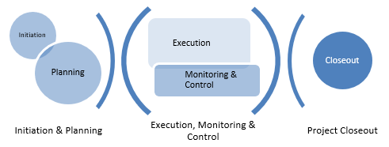

Delivery Elements#
Overview#
GTE projects are managed through five process groups aligned to those identified in the PMBOK Guide, namely: Initiation, Planning, Execution, Monitoring & Control, and (Project) Closeout.
These process groups are distinct from the lifecycle phases defined in the framework overview.
Note
The Execution process group should not be confused with the project lifecycle phase of the same name. For an order of magnitude study, for example, the Execution process group would involve the development of the study deliverable(s). Similarly, the Closeout process group differs from the phase of the same name occasionally used by clients – GTE refers to a phase named "Execution Closeout" (see Section 7.6), so named to avoid confusion; and uses "Project Closeout" to refer to the group of processes performed in closing out the project rather than the technical deliverables.
Some process groups necessarily overlap in practice and occur concurrently however the majority effort is generally segregated as depicted below.
The planning, and monitoring and control, process groups involve activities that occur continually throughout the entire project duration from initiation through to closeout, however the depicted deviation from standard PMBOK definitions more closely aligns with GTE project performance.
Note
Planning quite clearly occurs through the project, however planning is considered part of the Monitoring & Control process group once the initial project planning has concluded and execution has commenced.

For GTE projects the initiation and planning process groups can be considered one and the same as the work in each occurs promptly following project award – almost simultaneously – up to the commencement of the execution work.
To avoid dispute with PMBOK, GTE refers to "delivery elements" as those distinct components in the overall execution of a project. These become the level 2 in the GTE standard project WBS and are a combination of grouped PMBOK process groups described above, and the standard phases through which the execution work for GTE projects typically move (these are items 2 to 6 that follow).
The level 2 delivery elements are then (in general linear order of execution, with the exception of Monitoring & Control which spans 2 – 6):
- Initiation & Planning
- Scope Confirmation & Concept Design (0-30%)
- Design Development (30-100%)
- Testing
- Site Works
- Execution Closeout
- Monitoring & Control
- Closeout
This documentation provides information for the Project Manager on the possible requirements of each delivery element in terms of the activities and outputs that may be necessary, and the varying detail or rigour that may be associated.
Each delivery element is essentially systemised to consist of Commencement Checks, Activities & Outputs, and Completion Checks.
Commencement Checks
Commencement Checks may establish the existence or availability of necessary inputs, being those prior activities or existing documents that are required to complete aspects of the work in the delivery element. Oftentimes, inputs will be derived from the outputs of an earlier delivery element.
Activities & Outputs
Activities are the actual undertakings in pursuit of the objectives of the delivery element. This includes the work to be done, collaborations, and meetings to achieve that work.
Outputs can include hardware, software, and documents or drawings. These may be deliverables (or ‘client deliverables’) produced specifically for the client, or simply records produced fundamentally to support the management of the project.
Completion Checks
Completion Checks simply confirm that all necessary work with a delivery element has been completed.
The Output Applicability Grid#
The Output Applicability Grid defines the activities and outputs necessary in each of the delivery elements for various project categorizations. Project type, disciplines involved, and classification all affect the types and details of activities and outputs that are applicable. The matrix dictates whether any given activity, output or sub-element of an output is:
M – Mandatory, ie must be obtained, completed or produced as relevant to the input/activity/output. In the case of mandatory inputs, these are critical and should be clearly identified in the project schedule, particularly in the instance where the client is to provide these.R – Recommended, ie input/activity/output is desirable but not mandatory. Justification should be provided and recorded where not included.O – Optional, ie best practice activities or outcomes that can be included where relevant in consideration by the project manager of project size, type, and customer requirements which may not be appropriately considered by the matrix in any given instance.N/R – Not Required.
Note
The project scope may dictate that an output is a deliverable. In this instance, it obviously becomes mandatory regardless of the stipulation of the Output Applicability Grid.